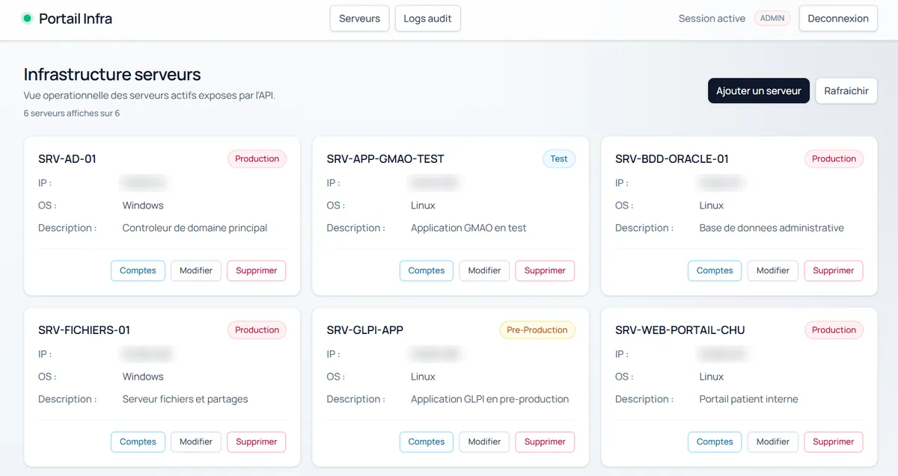

Erdem Kurac
Développeur, en 3e année de BUT Informatique à Orléans.
J'aime construire des applications complètes, de la base de données jusqu'à l'interface, et soigner ce qui ne se voit pas, comme la sécurité et le déploiement.
Projets
- Desktop Data PipelineL'application de bureau de notre SAE : des mesures de labo transformées en courbes.Python, PyQt6, PostgreSQL

Portail InfraLes comptes techniques d'un hôpital, rangés et protégés.Vue 3, Flask, LDAP Échecs en réseauUne partie en ligne où chaque coup passe chiffré.Python, sockets, AES-GCM
Échecs en réseauUne partie en ligne où chaque coup passe chiffré.Python, sockets, AES-GCM- Chaîne CI/CDChaque modification testée, scannée, puis déployée.GitHub Actions, Docker
 Le Parc du JurassiqueUn labo de paléontologie, jusqu'à l'analyse d'ADN.Flask, MySQL
Le Parc du JurassiqueUn labo de paléontologie, jusqu'à l'analyse d'ADN.Flask, MySQL Prestige AutoUn catalogue de voitures en JavaScript pur.JavaScript, Rollup
Prestige AutoUn catalogue de voitures en JavaScript pur.JavaScript, Rollup- Robot de trading301 trades simulés sur des données de 2022 à 2026.MQL5, Python
Aussi en BUT : une application web d'assurance (Python et MySQL, calcul de vétusté, rapports PDF) et une application mobile Flutter reliée à une base graphe Neo4j par une API Flask.
Cliquez sur une carte pour ouvrir le projet. Celles qui portent Démo s'essaient directement ici.
Parcours
2021 à 2024
Bac général, spécialités maths et physique, mention Bien. Lycée Durzy, Villemandeur
2024 à 2027
BUT Informatique, IUT d'Orléans
Avril à juin 2026
Stage de développeur en autonomie au Centre Hospitalier de Gien
Juin à août 2026
Job d'été : conducteur de ligne de conditionnement chez Louis Lemoine
Février 2027, 16 semaines
Stage de fin d'études, peut-être chez vous
- Langages
- Python, Java, C, C++, C#, JavaScript, TypeScript, PHP, Dart, SQL, Rust.
- Back-end
- Flask, Django et .NET, pour des API REST avec connexion JWT ou LDAP.
- Interfaces
- Vue 3, React, Tailwind CSS, HTML et CSS. Flutter pour le mobile, PyQt6 pour le bureau.
- Données
- MySQL, PostgreSQL, Oracle et PL/SQL, SQLite, Neo4j. Analyse avec pandas, NumPy et Matplotlib.
- Sécurité
- Chiffrement AES, échange de clés ECDH, mots de passe hachés, journal d'audit.
- Outils
- Git en équipe, Docker, GitHub Actions, tests automatisés, Active Directory, Linux et Windows.
Hors du code
Passionné de mécanique et d'automobile : le sujet de Prestige Auto tombait bien. J'analyse aussi les marchés financiers, d'où le robot de trading.
On en parle ?
Une offre de stage, une question sur un projet : écrivez-moi.
Site fait main, sans framework. En fond : le jeu de la vie de Conway en thème sombre, un plan de métro en thème clair.